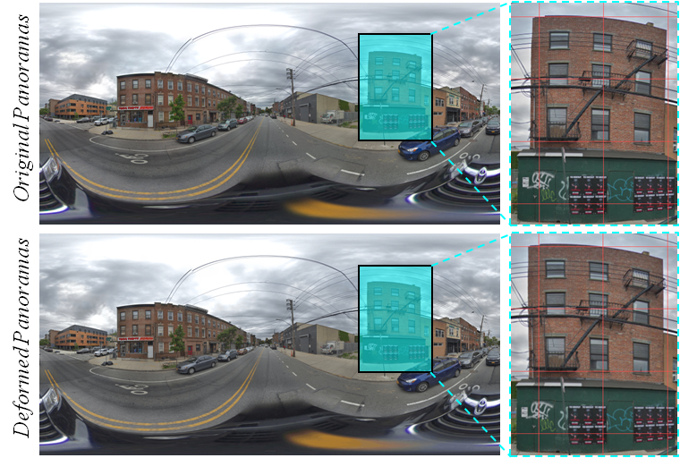
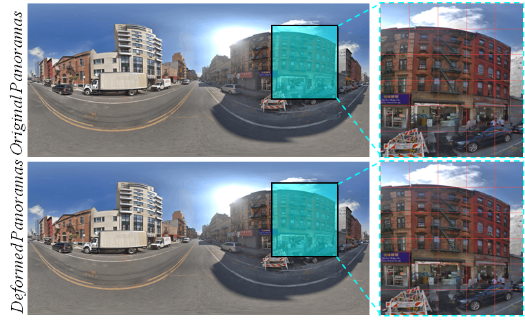

Façade features are important in large-scale LoD-3 reconstruction in urban environments, and street-view panoramas are arguably the best option for detailed 3D façade modeling. However, despite the plethora of street-view panoramas available, few studies have explored the metric capabilities of panoramas. This is due in part to the complexities of system integration and in part to problems associated with projection (e.g., distortion at the tops of buildings) and deformation (e.g., the bending of straight structures). In an effort to solve these problems, this study introduces a flexible and practical solution using only a single panorama. The key is to efficiently rectify panoramas using image-space line constrained deformation inspired by the as-rigid-as-possible deformation of surface meshes. The image is then re-projected using gnomonic projection on a properly selected tangent plane. The proposed approach requires a reasonable amount of user interaction to select and position the vertical line segments. The tangent point is also chosen empirically for each panorama. The rectified images can then be imported into off-the-shelf 3D modeling solutions as reference images for interactive sketching. Experimental evaluations reveal the effectiveness of the image-space rectification: after proper scaling, the semantic-aware 3D façade models achieve decimeter-level accuracy with respect to the reference surface mesh.


All the videos below are also available in bilibili for Chinese users.
This work was supported in part by the National Natural Science Foundation of China(Projects No.: 41631174, 61602392, 41871291) and in part by the National Key Research and Development Program of China (Project No.: 2018YFB0505404)